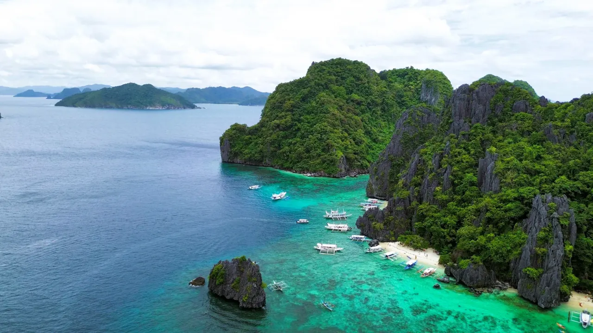
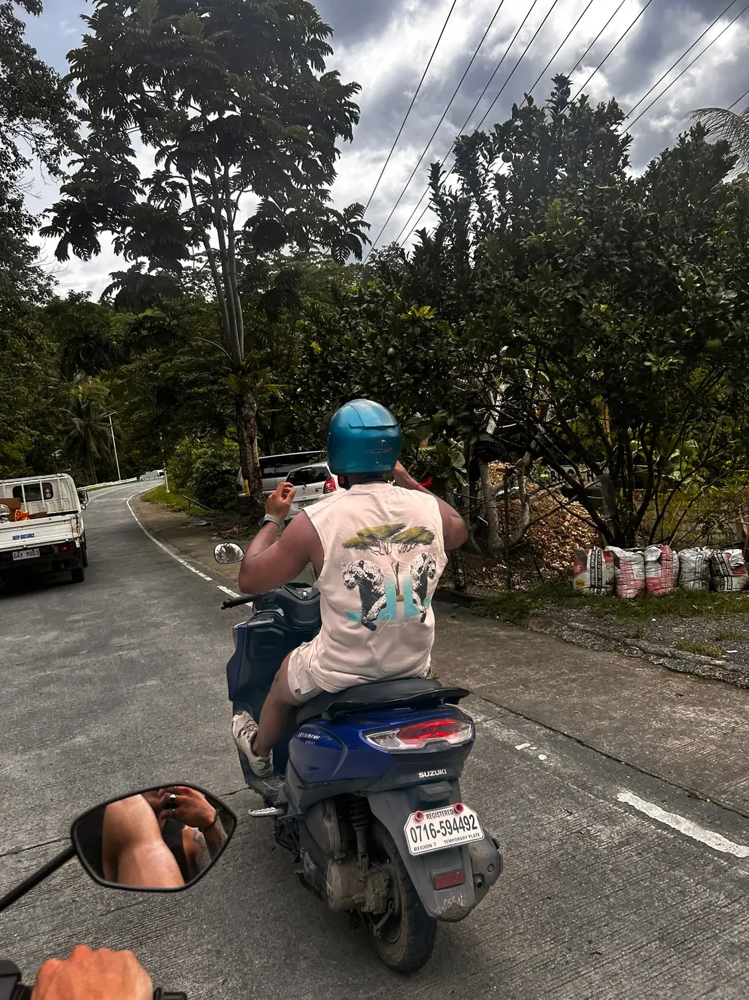
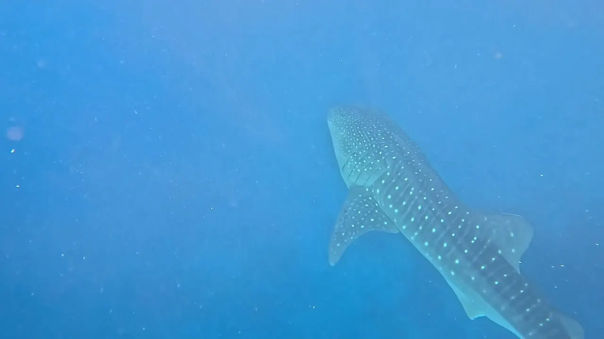
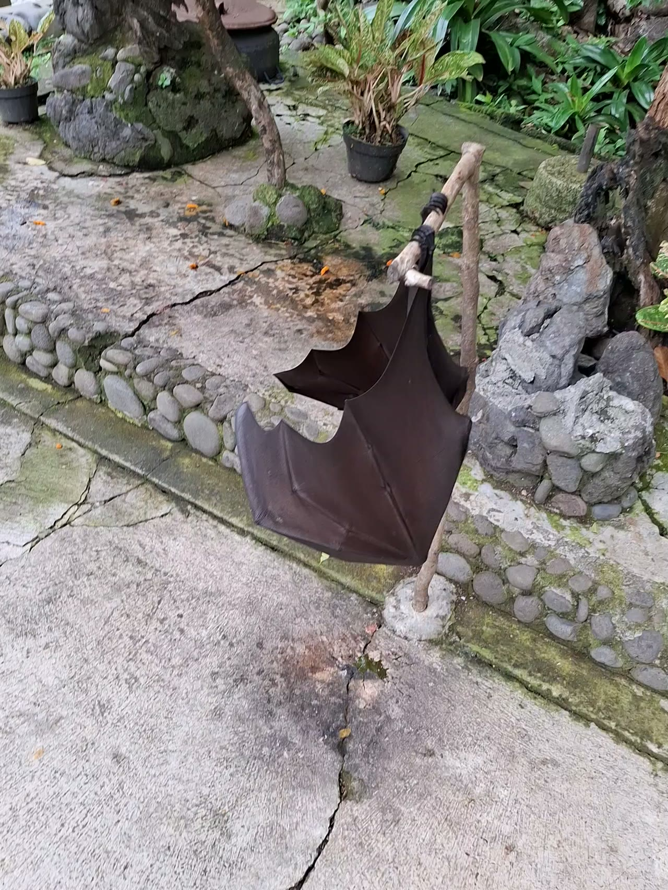
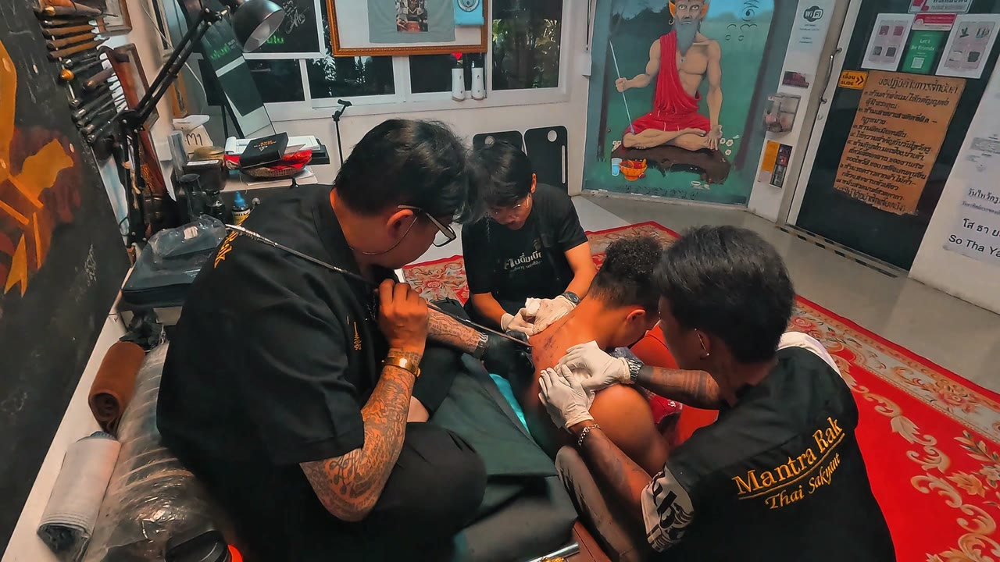

Room to breathe
Four days around Khao Sok showed me how good it can feel to be present without a constant signal or a packed schedule.
Open Field Note →
I’m Dainyel. I turn time on the road into honest travel stories, films and the moments you can’t plan.
The route stays secret until I get there.
Countdown to departure
28 October 2026 at 00:00 Netherlands time. Enable JavaScript for the live countdown.
No check-in shared for this trip yet.
Travel days use the trip’s reporting timezone: Europe/Amsterdam.
Follow the shared journey →A weekly postcard with interesting facts about the places I’m exploring, plus travel stories, films and moments from the road — straight to your inbox.
Read a past Postcard first →Join instantly. No confirmation click needed. Unsubscribe at any time. Form not loading? Sign up here →
Explore the countries, territories and memories that shaped the way I travel. New places join the story only when I reveal them.
Open the atlas →Choose a highlighted place, or use the list below.
Explore the places I’ve already visited. The next destination stays a surprise.
Read the story →Previously visited places only. New destinations appear when I reveal them.

New perspectives, city streets and room to breathe.

Three months of study life, family and an honest reflection.

A different rhythm. A journey with room to be surprised.

I’m a travel creator from Emmen, the Netherlands. A trip to Barcelona at 18 started something that never really stopped.
Since then, I’ve studied in Thailand and Bali, found a second home in a local bar, and learned that a good trip is as much about the people as the place.
More about me →The road, the ocean and the moments in between. Open a film to get a little closer.






Four days around Khao Sok showed me how good it can feel to be present without a constant signal or a packed schedule.
Open Field Note →
Warunk WOW was a coffee stop by day and a small club at night. The staff and regulars made it feel like a second home.
Open Field Note →
Island roads, rooftop sunsets and a change of plans. My Philippines adventure with friends became a story I could never have planned.
Open Field Note →Curious about a trip? Ask me directly. Looking for another perspective? Invite fellow travellers into the conversation.
Questions and replies are reviewed before they appear publicly.
Honest travel stories, thoughtful creator content and real experiences. Have something in mind?
My friends and family have always known me as the one ready for the next trip. DainyelOnTheMove simply gave that feeling a name.
At 18, I went to Barcelona with someone who quickly became one of my closest friends. That first shared adventure made travel feel like more than a holiday and started an appetite for seeing much more of the world.
What keeps me travelling is the people, cultures and perspectives I find along the way: a local meal, a good night out, an early hike or somewhere I did not expect to find.
Travel is not a scorecard. It is the perspective you bring home, and the respect you show while you are away.
A little more about me and the way I travel. Open whichever part you are curious about.
I am social, adventurous and open-minded. I like seeing a culture through the eyes of the people who live there: listening first, trying the food and respecting local norms.
Working as an assistant manager taught me to read people, bring humour to a moment and make room for everyone. Hostels bring that same sense of connection to a trip; the shared stories often matter more than an extra hour of sleep.
I plan the essentials and leave room for detours. An early breakfast, exploring or taking it slow, a drink somewhere new, dinner and a night out: I like a little bit of everything.
I am an animal lover and try to make time for an animal park or zoo when I travel. Nature, wildlife, hiking, snorkelling and diving help me slow down. A gym session, bike ride or hike keeps my mind clear, at home or away.
“No importa el camino, lo importante es seguir caminando.”
The path does not matter; what matters is that you keep walking.
My camera, travel tech and a bag full of practical things always come with me. Friends gave me the nickname “gadget-man”; it is how I make sure a moment does not disappear when the trip ends.
The full stories, places and practical details each have their own home.
Chapters and photographs from each journey, alongside shorter moments and discoveries.
Explore the stories → WatchIn Bangkok, I received a sacred Sak Yant tattoo from Arjan Neng. Watch that personal moment in the film collection.
Open the Sak Yant film → ExplorePreviously visited places, travel memories and links to their stories. New destinations join when I reveal them.
Find a place on the map → Behind the cameraThe drones, camera, sound equipment and everyday essentials I use to capture and share the journey.
See what is in my bag →A couple of moments to start with: ziplining above the coast in El Nido and wildlife encounters in Thailand.
Choose a country or territory to explore its memories, visit years and available stories. Switch layers to follow places shared from the new journey.
Tap or click any country to explore the map. Use + and − to zoom.
Country outlines: Natural Earth map data, simplified for this travel map.
Visited destinations and trip years: Spain (2020); Barcelona (2021, two trips, and 2024); Italy (Milan 2022, Rome 2023); Portugal (2023); Belgium (Namur 2023); Poland, Sweden, Denmark and Scotland (2023); Germany (every year); Vatican City (2023); Curaçao (2019 and 2022); Aruba (2023); Tunisia (2024); Bali, Indonesia (2024–2025); Thailand (2024 and 2025); and the Philippines (2025).
City and country only, shared when I choose to.
The route stays secret until I get there.
Choose “Load questions and forms” to connect to the moderated Q&A service.
Real questions, answered from my own travels. Choose a question to open my answer.
Published answers will appear here once connected.
Only approved questions and replies appear here. Add your experience where it can help someone else.
Community conversations will appear here once connected.
Choose who you would like to ask. Open a form when you are ready.
Keep it specific and friendly. A nickname is fine; no email address is needed.
Ask Dainyel: this is a question for me, not a private message. Approved questions and answers may be published here. We do not ask for your email, so return to this page to read the answer. Questions and community replies are reviewed before publication; there is no guaranteed response time. Please leave out private contact details.
Your email address is never requested. Use a nickname you are comfortable sharing publicly.
Questions and replies stay private until Dainyel reviews and approves them. Personal questions are published with Dainyel’s answer; community questions invite other travellers to share their experience.
No email address is requested. Use a nickname, keep your question specific and kind, and leave out private contact details. Return here to read replies; there is no guaranteed response time.
Suggest a small, optional travel challenge. Dainyel reviews every suggestion and decides what fits the journey. No votes, promises or invented results.
No challenges have been published yet.
Sending will be available when the secure service is enabled. Public suggestions stay private until reviewed.
With a degree in International Business and experience as an assistant manager, I bring curiosity, practical thinking and a personal voice to travel content.
Explore real work from Thailand, Bali and the Philippines below. The work below shows the style and formats I create.
See the travel stories →Every collaboration starts with the location and the story, then finds the format that suits the audience.
Personal stories and short films that show the experience around a place, from the street food to the quiet moments between locations.
Vertical videos and photo-led posts for Instagram, TikTok and YouTube Shorts that feel native to the journey.
Thoughtful creator content for travel, outdoors, gear and lifestyle projects—captured in a way that keeps the real setting intact.
I am building DainyelOnTheMove for people who value the experience as much as the final image.
We agree on the purpose, audience, deliverables and why the collaboration belongs on the channel.
The result should give viewers a real sense of the place, product or experience instead of a generic advertisement.
We keep communication simple and agree on approvals, usage and timing before publishing anything.
The best way to understand the style is to see the stories and films already on the site. They combine personal perspective, local detail, movement and the occasional unplanned moment.
Explore the travel stories →A personal long read about a three-month study exchange. Read the story →

Photographs and an honest perspective on living and studying on the island. Explore the story →
A short film from the road. The full written story is still in progress. Watch the film →
This profile contains my current offer and work examples. For a project brief or usage details, contact me on Instagram.
Tell me what you have in mind. A travel collaboration, photography or film project, a practical question, or feedback on the website.
Destination stories, photographs, short travel films and creator content rooted in real experiences. Share your idea, the audience and what you need. We can discuss scope and availability together.
Philippines · a glimpse from the road
Read the story behind it →Philippines · on the road
Read the story behind it →Philippines · whale shark encounter
Read the story behind it →Bali · flying foxes at Alas Kedaton Monkey Forest
Read the story behind it →Bangkok · a personal experience with Arjan Neng
Read the story behind it →Instagram supplies the preview; playback may open on Instagram.
Travel films, short moments and a look behind the lens. Choose a film to open its player and the story behind it, or visit a social channel.